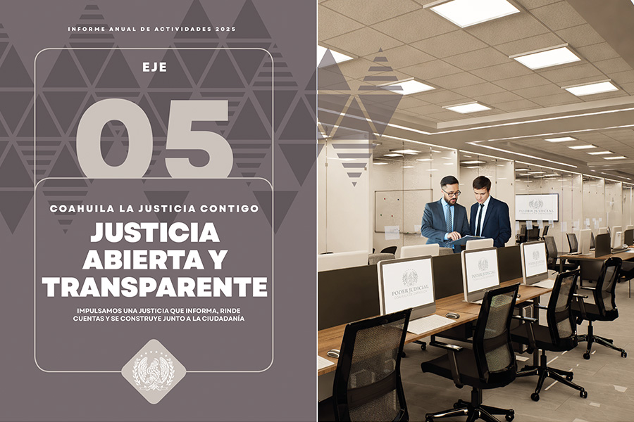
Eje 5 Justicia Abierta y Transparente
IMPULSAMOS UNA JUSTICIA QUE INFORMA, RINDE CUENTAS Y SE CONSTRUYE JUNTO A LA CIUDADANÍA
En el Poder Judicial de Coahuila asumimos la transparencia como un eje central de nuestro quehacer institucional. Este enfoque parte de una convicción clara: la confianza de la ciudadanía se fortalece cuando las decisiones judiciales, el uso de los recursos públicos y la gestión institucional se comunican con claridad, oportunidad y responsabilidad.
Bajo esta visión, en 2025 impulsamos una serie de acciones orientadas a garantizar el acceso efectivo a la información pública y a consolidar una relación más cercana con la sociedad. Se reforzaron los mecanismos de transparencia proactiva, se priorizó la publicación oportuna de acuerdos y resoluciones, y se amplió la difusión de información relevante a través de la página web. Estas medidas permiten que la ciudadanía conozca en tiempo real el funcionamiento del Poder Judicial y ejerza plenamente su derecho a la información.
De manera paralela, avanzamos en una visión de rendición de cuentas que va más allá del cumplimiento normativo. A través de una comunicación institucional constante, el uso estratégico de redes sociales, la difusión de campañas informativas con lenguaje incluyente y ciudadano, y la atención directa a las personas usuarias del sistema de justicia a través de nuestra línea de WhatsApp, promovemos un diálogo abierto que fomenta la participación social y el escrutinio público.
Asimismo, consolidamos un modelo de justicia abierta que promueve la participación ciudadana y el diálogo permanente con la sociedad civil, así como con foros, barras y colegios de profesionales del derecho. Estos espacios de vinculación nos permiten escuchar, intercambiar experiencias y construir políticas públicas que respondan a las demandas de la sociedad.
De igual forma, fortalecimos el Observatorio Judicial, como un mecanismo de análisis y retroalimentación social, que nos permite evaluar el desempeño e identificar oportunidades de mejora en la impartición de justicia.
Este esfuerzo integral responde al compromiso del Poder Judicial de Coahuila de consolidar una justicia innovadora, cercana y confiable, en la que la transparencia y la apertura no son solo obligaciones formales, sino herramientas para dignificar la función judicial y fortalecer el Estado de Derecho.
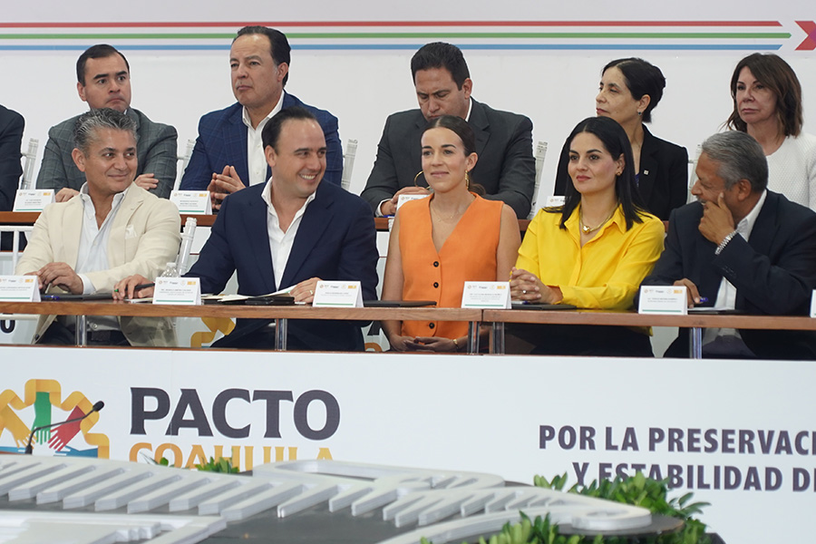
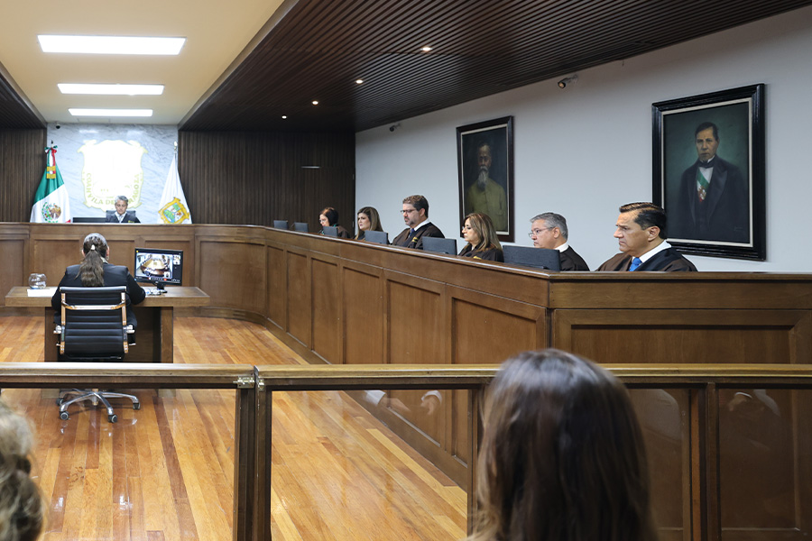
Transmisión de Sesiones del Pleno del Tribunal Superior de Justicia
En la actualidad, la tecnología aplicada a garantizar el derecho a la información de la ciudadanía contribuye a fortalecer la confianza, transparencia y rendición de cuentas asociadas al ejercicio de la actividad pública.
Por ello, en el Poder Judicial de Coahuila, a través del uso de plataformas digitales y las redes sociales institucionales, abrimos las puertas del Tribunal a las y los coahuilenses mediante la transmisión en tiempo real de las sesiones del Pleno del Tribunal Superior de Justicia y del Tribunal Constitucional. Esta práctica consolida un ejercicio de gobierno abierto que garantiza el acceso libre y sin restricciones a la información pública, favoreciendo una justicia más cercana y transparente.
Durante 2025, se transmitieron 33 sesiones del Pleno y dos sesiones del Tribunal Constitucional, permitiendo que las y los coahuilenses puedan dar seguimiento puntual a las deliberaciones y resoluciones que inciden en la vida pública.
Transmisión de Sesiones de las Salas Colegiadas
La transmisión de las Sesiones de las Salas Colegiadas (Civil y Mercantil, Familiar, Penal y Regional) no solo fortalece la rendición de cuentas y transparencia, sino que también promueve la participación informada de la sociedad en los asuntos públicos relacionados con el acceso a la justicia, al observar y escuchar de manera directa el proceso de análisis, deliberación y toma de decisiones que impactan en el acceso a la justicia.
Por lo cual, en el año que se informa, difundimos 134 sesiones en vivo por medio de las redes sociales del Poder Judicial y del sitio web.
Desahogo de Audiencias a Distancia
En el Poder Judicial de Coahuila a través del uso responsable de las tecnologías disponibles, hemos impulsado acciones que permiten acercar nuestra labor a las personas, eliminando barreras y facilitando la participación oportuna en los procesos judiciales.
Como resultado, este 2025 celebramos seis mil 288 audiencias mediante videoconferencia,además de 384 por llamada telefónica.
Vinculación con la Sociedad Civil
El Modelo de Justicia de Coahuila está determinado a generar cercanía con la sociedad y fortalecer la confianza en la institución. Por tal motivo, durante este año continuamos con el trabajo con diversos colectivos para generar espacios de escucha y colaboración y dar seguimiento a sus demandas y atender sus necesidades específicas.
En este tenor, en 2025 dimos atención a colectivos y asociaciones civiles de diferentes causas como: personas desaparecidas (Voz que clama Justicia y Alas de Esperanza); de personas con discapacidad (Sinergia por Amor A.C., Centro TEApoyo A.C. Neurodivergencias, y Enlace Conecta); de violencia vicaria (Frente Nacional contra la Violencia Vicaria y Vasta VV); feministas (Activistas Feministas de la Laguna), y con víctimas de feminicidio (Madres Poderosas de la Laguna).
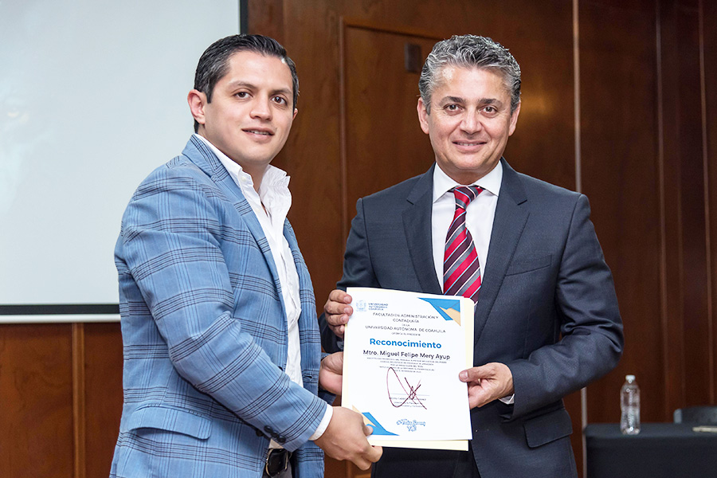
La colaboración con los diversos sectores de la sociedad exige ahondar en los mecanismos de diálogo con las y los aliados estratégicos de la institución, quienes día a día con sus opiniones, puntos de vista y recomendaciones contribuyen a la mejora del servicio y a una justicia cada vez más eficiente.
Diálogo con barras, colegios y foros de abogados
La participación estratégica del Poder Judicial en espacios de diálogo e interacción con quienes participan activamente en el sistema judicial ha sido fundamental para mejorar la atención y fortalecer nuestro Modelo de Justicia centrado en las personas y sensible a las realidades sociales, así como la confianza institucional.
Con esta visión, a lo largo del año promovimos espacios de encuentro y comunicación con barras, foros y colegios de abogados y notarios del estado. Estas reuniones se consolidaron como un ejercicio de escucha y retroalimentación que permitió compartir experiencias, analizar buenas prácticas y reflexionar de manera conjunta sobre los retos que enfrenta la impartición de justicia a raíz de la Reforma Judicial.
Línea de Atención por WhatsApp
Durante el periodo informado, otorgamos más de dos mil respuestas personalizadas desde orientación e información de los diversos trámites que pueden realizar en el Poder Judicial de Coahuila, y canalizaciones estratégicas hacia servicios especializados como el Instituto de Defensoría Pública, el Centro de Medios Alternos de Solución de Controversias, juzgados de primera instancia, y a diversas instituciones externas como la Fiscalía General del Estado de Coahuila, todo esto a través de WhatsApp en la línea 844 5066 0075.
Este esfuerzo refleja el propósito firme de avanzar hacia una justicia cercana y accesible en cada rincón del estado, que reconoce las necesidades particulares de cada persona y refuerza la confianza pública en la institución.
Observatorio Judicial
Durante el periodo que se informa, el Observatorio Judicial del Poder Judicial del Estado de Coahuila de Zaragoza desempeñó un papel relevante como instancia de acompañamiento, análisis y seguimiento a los movimientos institucionales derivados de la implementación de la Reforma Judicial, contribuyendo a fortalecer los principios de transparencia, apertura institucional y rendición de cuentas.
En este contexto, dimos seguimiento a los procesos de adecuación normativa, organizacional y operativa impulsados a partir de la reforma, generando insumos de análisis, sistematización de información y observación técnica que permitieron documentar los avances, retos y áreas de oportunidad en la transformación del sistema de impartición de justicia.
Asimismo, coadyuvamos en la identificación y análisis de buenas prácticas, así como en la revisión de los impactos institucionales de la reforma en los distintos ámbitos de actuación del Poder Judicial, manteniendo un enfoque orientado a la mejora continua y al fortalecimiento de la confianza ciudadana.
A través de estas actividades, el Observatorio Judicial fungió como un mecanismo de vinculación entre el proceso de transformación institucional y la ciudadanía, promoviendo el acceso a la información pública, la difusión de los cambios derivados de la Reforma Judicial y la generación de espacios de reflexión y análisis sobre su implementación.
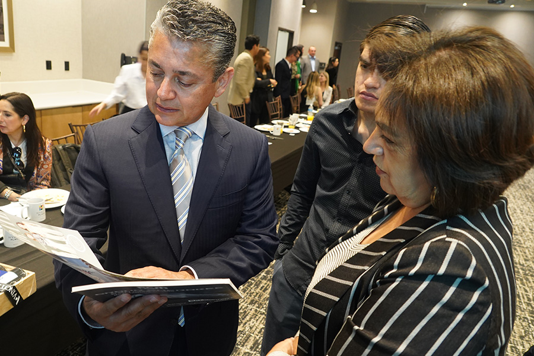
Observadores Ciudadanos
A través del Capítulo Regional Torreón desarrollamos actividades de observación de audiencias, conforme al Plan de Trabajo 2025, con el objetivo de identificar áreas de oportunidad y posibles mejoras en los procesos jurisdiccionales y no jurisdiccionales del Poder Judicial de Coahuila. Hasta el periodo que se reporta, dichas actividades se llevaron a cabo en las materias penal y mercantil, con la finalidad de generar insumos que contribuyan al fortalecimiento del servicio judicial. Para la adecuada implementación de esta actividad, resulta indispensable contar con personas observadoras que participen de manera continua en los ejercicios de observación. En este sentido, y con base en los objetivos del Consejo del Observatorio Judicial, se realizaron gestiones ante diversas instituciones de educación superior, entre ellas la Universidad Iberoamericana, la Universidad Autónoma de La Laguna (UAL) y la Universidad Americana del Noreste (UANE), con el propósito de vincular a estudiantes de la carrera de Derecho como observadores judiciales, mediante esquemas de validación de servicio social o prácticas profesionales.
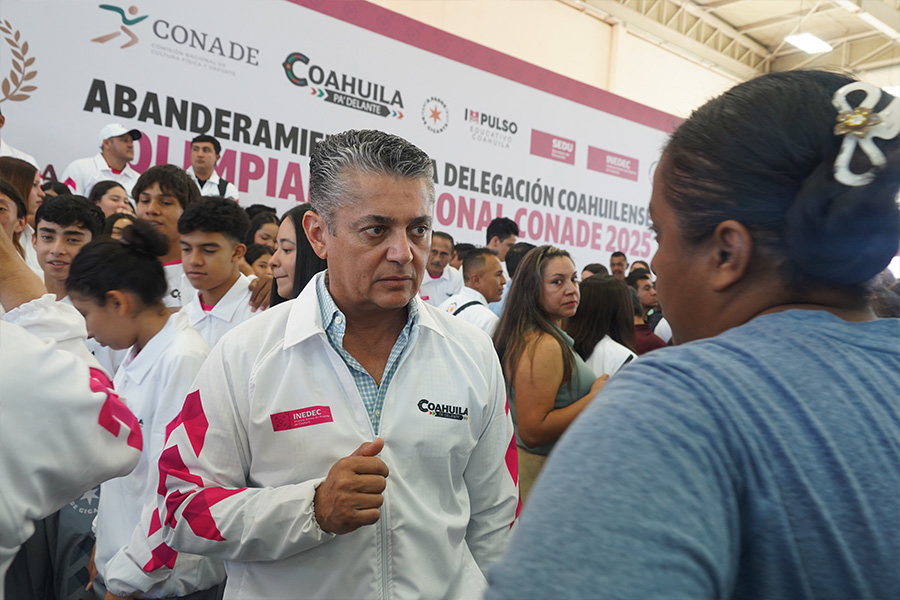
La participación universitaria representa un reto significativo para el cumplimiento de los objetivos del proyecto de Observadores Judiciales durante el 2025 y en los ejercicios subsecuentes, particularmente considerando que la intención del Observatorio es ampliar progresivamente la observación a todas las materias que integran la función jurisdiccional del Poder Judicial del Estado.
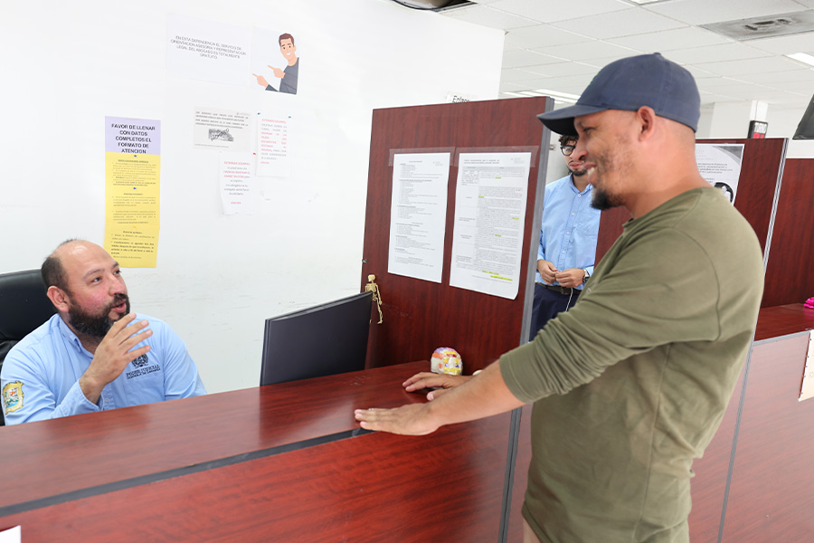
Atención a Solicitudes de Acceso a la Información
El acceso a la información pública constituye uno de los pilares del Modelo de Justicia de Coahuila, no solo como un derecho humano esencial, sino como una vía indispensable para la función jurisdiccional, fortalecer el Estado de Derecho y la participación informada de la sociedad.
A través de este derecho, la ciudadanía coahuilense puede conocer de manera clara y oportuna la información que se genera en el ejercicio de la función jurisdiccional y administrativa de este poder público, lo que permite comprender cómo se toman las decisiones y cómo se ejerce el mandato constitucional de impartición de justicia.
Frente a los procesos de reestructuración en el derecho a la información a nivel nacional, el Poder Judicial ha tomado la iniciativa de reforzar la divulgación proactiva de datos estadísticos e información sobre el quehacer jurisdiccional, facilitando a cualquier persona apreciar la magnitud y relevancia de nuestra labor.
Por esa razón, durante el 2025 asumimos con mayor responsabilidad la difusión de información pública, comprometiéndonos a explicar, justificar y mejorar nuestras acciones, así como a atender de forma responsable las solicitudes que la ciudadanía presenta mediante los canales establecidos.
Este diálogo permanente gestionado a través de las unidades de atención del Tribunal Superior de Justicia y del Tribunal de Conciliación y Arbitraje, favorece una comunicación directa, accesible y respetuosa con quienes acuden a esta institución en búsqueda de información.
Este año, el uso estratégico de herramientas tecnológicas ha sido clave para que el acceso a la información no solo cumpla con la normativa, sino que responda de forma ágil a las expectativas de una sociedad digitalizada, y durante el año que se informa continuamos avanzando en la digitalización y el uso de tecnologías, para que el acceso a la información se ajuste a las necesidades reales de la sociedad.
Para cumplir con el ejercicio del derecho de acceso a la información pública, durante el año atendimos 266 solicitudes.
Información Pública de Oficio del Poder Judicial
Trabajamos para garantizar que cualquier persona pueda acceder de manera sencilla y oportuna a la información pública, promoviendo la transparencia, rendición de cuentas y la participación ciudadana.
Para ello, desarrollamos y mantenemos procesos y herramientas que permiten poner a disposición de la sociedad la información que las instituciones están obligadas a hacer pública, en formatos accesibles y comprensibles, conforme a la Ley.
Respecto al cumplimiento de obligaciones en esta materia, el Poder Judicial de Coahuila, como el Tribunal de Conciliación y Arbitraje, obtuvo de parte del órgano garante la calificación máxima de 100 por ciento en el cumplimiento en sus obligaciones de transparencia.
Este puntaje es reflejo de un compromiso inquebrantable con la legalidad y la construcción de un vínculo de confianza absoluta con los coahuilenses.
Transparencia Proactiva
Durante 2025, impulsamos una estrategia de justicia abierta que fomenta la participación ciudadana en la toma de decisiones y que coloca a las personas en el centro de la institución, a través de nuestro portal de Transparencia Proactiva.
Este sitio se ha transformado en un centro de consulta dinámica que ofrece información estratégica y actualizada al tercer trimestre del año sobre diversos indicadores de justicia, estadísticas de divorcios y trámites de alimentos, así como datos relacionados con delitos como el feminicidio, declaración de ausencia y versiones públicas de sentencias, entre otros.
Estas acciones están encaminadas a brindar una justicia más accesible, efectiva, transparente, abierta y cercana a las personas y sus necesidades actuales.
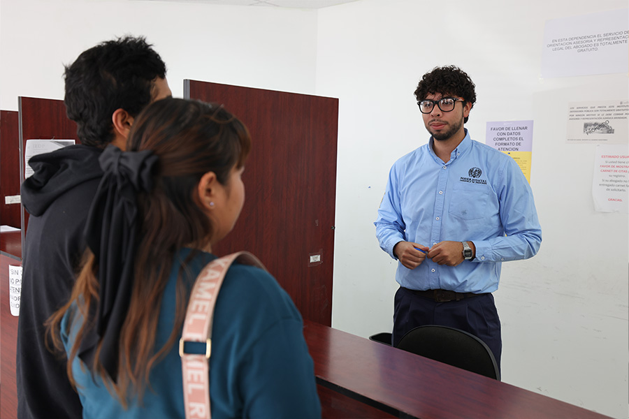
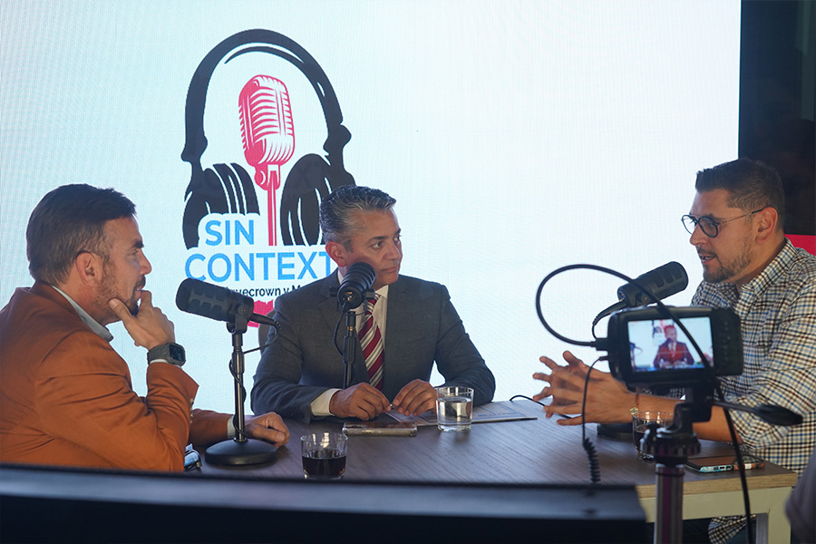
Comunicación y Difusión
La difusión de temas de interés para el Poder Judicial de Coahuila es parte fundamental del trabajo jurisdiccional y no jurisdiccional que se ofrece en favor de las y los coahuilenses.
Nuestro objetivo es dar a conocer y mantener informada a la sociedad sobre el quehacer institucional, las características de los servicios, los logros en favor de las personas. Lo anterior, a través de acciones de difusión en medios digitales.
Las redes sociales son un medio de comunicación en el que se puede compartir información inmediata para la ciudadanía, por ello generamos contenido de interés para las diversas audiencias que nos siguen por las cuentas oficiales de Facebook, Instagram y X (antes Twitter).
Es así que, en el 2025, en Facebook obtuvimos más de dos millones de visualizaciones, 54 mil 800 interacciones, 155 mil 400 visitas a la página y dos mil 400 nuevos seguidores, llegando a un total de 23 mil 597 (64 por ciento mujeres y 36 por ciento hombres); mientras que en Instagram generamos 245 millones de visualizaciones, con un alcance de 29 mil usuarios, tres mil 900 interacciones, más de cuatro mil visitas a la página y 543 nuevos seguidores, llegando a los dos mil 338 (55.3 por ciento mujeres y 44.7 por ciento hombres).
Utilizando estas herramientas digitales como vías de concientización, en el mes de marzo difundimos la campaña “Mujeres que inspiran” donde, por medio de entrevistas, dimos a conocer la historia de tres mujeres que forman parte de la plantilla de este Poder, siendo un ejemplo de superación, reconocimiento y empoderamiento para las niñas, adolescentes y mujeres en el estado. Con esta campaña logramos llegar a nuestras audiencias no solo por las redes, también por medios de comunicación impresos y digitales.
En el marco del “Día Internacional de la Eliminación de la Violencia Contra la Mujer”, por medio de nuestras redes sociales implementamos la campaña “16 días de activismo”, en la que se difundieron diversos materiales en imagen y video con la finalidad de generar conciencia sobre la violencia en razón de género y sus diferentes tipos, incentivando el respeto al derecho de una vida libre de violencia.
Adicionalmente, se ha puesto un énfasis en la difusión de los derechos humanos, a propósito de las efemérides y de hechos coyunturales que tienen un impacto en los servicios brindados por este poder público.
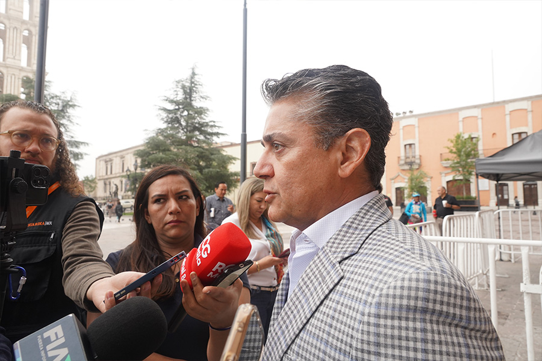
Asimismo, desde hace ocho años emitimos Poder Judicial al Aire, de la mano con Coahuila Radio y por nuestras redes sociales oficiales, con el que llegamos a los 38 municipios de Coahuila, transmitiendo dos episodios por semana con duración de 30 minutos cada uno. Este recurso nos permite dar a conocer temas de interés común en materia jurídica desde la voz de diferentes expertos de la impartición de justicia, informar sobre nuestra labor diaria, los trámites y servicios que ofrecemos, y lograr un vínculo cercano con las personas justiciables a través de 92 programas durante 2025.
Promoción y difusión de los Medios Alternos de Solución de Controversias
Con la finalidad de difundir y promover la cultura de resolución de conflictos por medio del diálogo, continuamos con nuestra participación en el Programa “La Noticia en Rojo” de la cadena de televisión y radio RCG, en la que participamos 45 veces, asimismo, seguimos colaborando con Radio Universidad, con la trasmisión del programa “MASC Justicia”, un espacio que tuvo 39 emisiones durante este año.
Como parte del acercamiento de la justicia alternativa y restaurativa a la sociedad, y de promocionar la cultura de paz, realizamos 91 pláticas de difusión donde obtuvimos una asistencia total de seis mil 784 personas, y participamos en 32 Talleres de Orientación Prematrimonial, con una asistencia total de dos mil 924 parejas.
Promoción y difusión del Instituto Estatal de Defensoría Pública
Durante este año, a través de la Universidad Autónoma de Coahuila, reforzamos nuestras acciones de difusión para acercar a la ciudadanía con contenidos claros, útiles y oportunos sobre sus derechos y sobre los servicios que ofrecemos.
A través de la página de Facebook, el canal de YouTube del IEDP y nuestra alianza estratégica con Radio Universidad de la UAdeC, ampliamos el alcance de nuestra labor, compartiendo materiales y mensajes que permiten a más personas conocer las rutas de atención y las herramientas disponibles para recibir orientación y defensa.
En el transcurso de este periodo, realizamos diversas publicaciones de materiales informativos, con las que generamos un alto nivel de interacción que se tradujo en el alcance de 136 mil 800 visualizaciones y más de dos mil 300 reacciones, comentarios y publicaciones compartidas en Facebook.
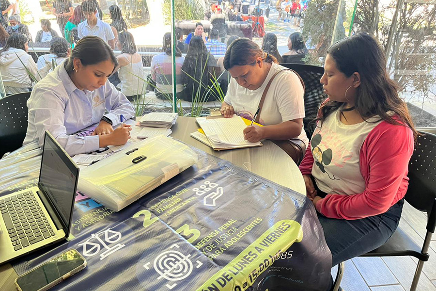
De manera paralela, mantuvimos una presencia activa en la atención directa de los mensajes recibidos en redes sociales, analizando y dando seguimiento a cada inquietud presentada por esta vía, así, respondimos mediante 422 mensajes en los que orientamos a las personas usuarias en la resolución de sus problemáticas. Esta comunicación constante con la ciudadanía refrenda nuestro compromiso de ser un puente confiable entre sus necesidades y el acceso efectivo a la justicia.
Asimismo, en el año que informamos continuamos con nuestra colaboración con Radio Universidad de la UAdeC, transmitiendo semanalmente el programa “Defensoría Contigo”, con el principal objetivo de acercar el conocimiento jurídico a la ciudadanía mediante un lenguaje claro y accesible, abordando temas legales de relevancia social y explicando los servicios que ofrecemos a través del Instituto Estatal de Defensoría Pública.
Aunado a lo anterior, abrimos un canal de YouTube como extensión digital del programa "Defensoría Contigo", para que estos contenidos estén en una plataforma abierta a toda la ciudadanía y puedan consultar en cualquier momento del día. Con dichas acciones fortalecemos la cultura de la legalidad y ampliamos el alcance de los servicios de Defensoría Pública, generando mayor confianza institucional y promoviendo una justicia más cercana a la sociedad.
Presentación del libro: ‘Historia del Poder Judicial de Coahuila de Zaragoza’
El 15 de julio de 1827 se instaló formalmente el Supremo Tribunal de Justicia del Estado, hecho que marca el origen histórico de la judicatura coahuilense. Conscientes de la relevancia de este acontecimiento, impulsamos la creación de la obra “Historia del Poder Judicial de Coahuila de Zaragoza”, un compendio que celebra el legado, la evolución y el futuro de la justicia en la entidad, como parte de las actividades previas a la conmemoración de los 200 años de la institución.
El evento fue encabezado por el Gobernador Constitucional del Estado, Manolo Jiménez Salinas, el Magistrado Presidente del Tribunal Superior de Justicia, Miguel Felipe Mery Ayup, la Diputada Luz Elena Morales Nuñez, Presidenta de la Junta de Gobierno del Congreso de Coahuila, y el autor, José María García de la Peña, quienes destacaron la relevancia de esta obra como un testimonio de casi dos siglos de historia, modernización e innovación en el sistema judicial.
Los tres tomos dan cuenta de los inicios y el avance de este poder público, así como una visión inspiradora de cómo el pasado, presente y futuro de la justicia se entrelazan para construir un sistema más sólido y comprometido con la sociedad.
En el marco de la presentación de esta obra, en reconocimiento al esfuerzo, dedicación y compromiso de servir al estado de Coahuila, el Gobernador Manolo Jiménez Salinas, el Magistrado Presidente Miguel Felipe Mery Ayup, y la Diputada Luz Elena Morales Nuñez develaron el muro “Magistradas y Magistrados de Coahuila”, ubicado en el Palacio de Justicia, en honor de las mujeres y hombres que han servido a esta institución.
En el muro se encuentran inscritos los nombres de las magistradas y los magistrados que hasta este momento han formado parte de la historia del Poder Judicial del Estado de Coahuila.
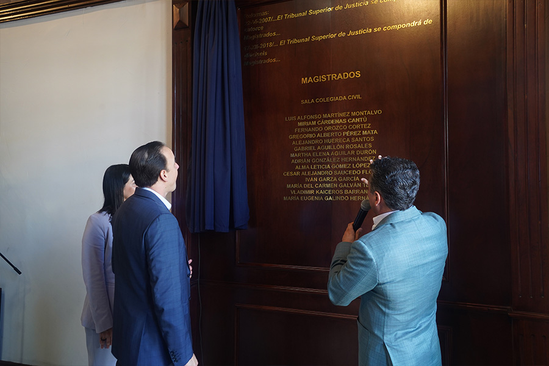